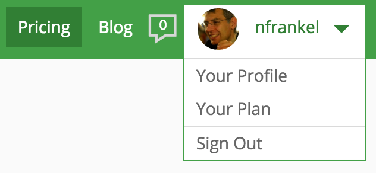
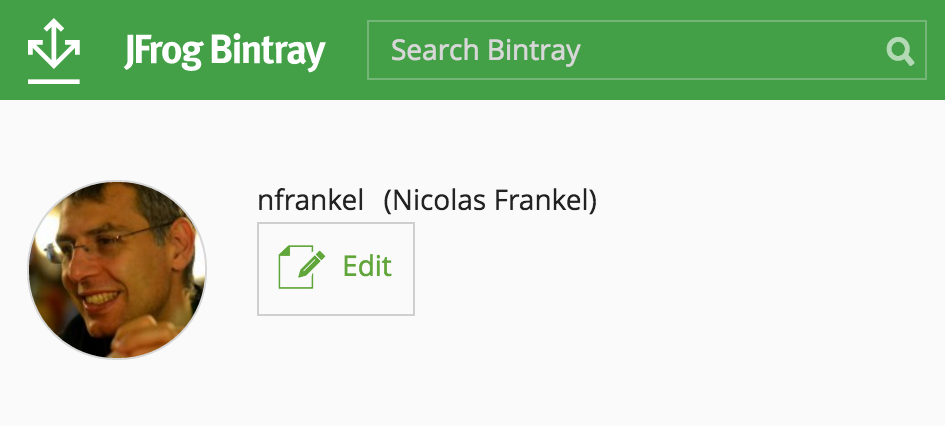
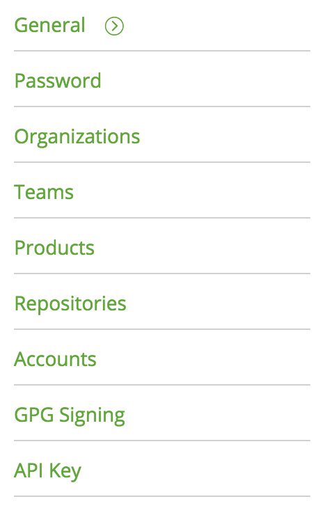
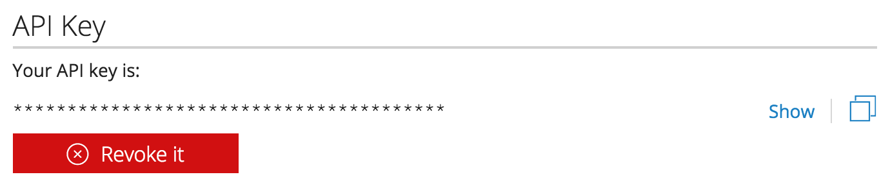

Ce document est mis à disposition selon les termes de la Licence Creative Commons Attribution - Pas d’Utilisation Commerciale - Partage dans les Mêmes Conditions 4.0 International.
1. Objectif
L’objectif de cette fiche est de porter un projet sous Maven pour automatiser le processus de build.
3. Installation de Maven
Avant d’utiliser Maven, il est d’abord nécessaire de le mettre à disposition sur la machine locale.
En fonction du système d’exploitation, les méthodes d’installation de Maven sont différentes mais il existe une méthode commune :
-
Télécharger le zip de Maven
-
Décompresser celui-ci dans le dossier standard des applications pour le système d’exploitation
Pour Window, il est fortement conseillé que le chemin ne comporte pas d’espaces.
-
Si ce n’est pas le cas, ajouter une variable d’environnement
JAVA_HOMEet la faire pointer vers le répertoire d’installation de Java -
Ajouter le chemin de vers le répertoire d’installation de Maven à la variable d’environnement
PATH
Une fois ces étapes réalisées, il est possible d’invoquer Maven depuis n’importe quel chemin du système de fichiers avec la commande mvn p.e. mvn compile.
4. Premier pas
Cette section permet de migrer son projet pour le rendre compatible avec le standard Maven.
La première étape consiste à répartir les sources du projet existant dans la structure Maven standard:
-
src/main/javapour le code Java "de production" qui doit être compilé -
src/main/resourcespour les autres fichiers "de production" -
src/test/javapour le code Java de test -
src/test/resourcespour les autres fichiers de test
La second étape consiste à créer un fichier Project Object Model nommé pom.xml et situé à la racine du projet.
Le squelette du pom.xml doit avoir la structure suivante:
<?xml version="1.0" encoding="UTF-8"?>
<project xmlns="http://maven.apache.org/POM/4.0.0" xmlns:xsi="http://www.w3.org/2001/XMLSchema-instance"
xsi:schemaLocation="http://maven.apache.org/POM/4.0.0 http://maven.apache.org/xsd/maven-4.0.0.xsd">
<modelVersion>4.0.0</modelVersion>
<groupId>ch.hesge.integrationcontinue</groupId>
<artifactId>monprojet</artifactId>
<version>0.0.1-SNAPSHOT</version>
</project>Il est bien sûr nécessaire de modifier les informations de groupId et d'`artifactId` pour être spécifiques à votre projet.
5. Configurer le proxy
Dans la plupart des cas, la station de travail (ou le serveur) ne peuvent pas accéder à Internet directement mais uniquement via l’utilisation d’un serveur proxy.
Pour ce faire, il est nécessaire de créer un fichier settings.xml dans votre home.
|
Le home dépend du type et de la version du système d’exploitation.
Il peut être recherché sur le web, ou bien récupéré depuis la propriété Java |
Le fichier de settings doit reproduire le modèle suivant :
<settings xmlns="http://maven.apache.org/SETTINGS/1.1.0"
xmlns:xsi="http://www.w3.org/2001/XMLSchema-instance"
xsi:schemaLocation="http://maven.apache.org/SETTINGS/1.1.0
http://maven.apache.org/xsd/settings-1.1.0.xsd">
<proxies>
<proxy>
<id>heg</id>
<active>true</active>
<protocol>http</protocol>
<username>identifiant</username>
<password>motdepasse</password>
<port>proxyhes.etat-ge.ch</port>
<host>80</host>
</proxy>
</proxies>
</settings>Si tout a été correctement réalisé, il est maintenant possible de construire votre projet à l’aide de la commande mvn package.
Vérifier l’existence d’un JAR dans le répertoire target à la racine du projet.
6. Gérer les plugins
6.1. Configurer un plugin
Cette section a pour objectif d’expérimenter avec la configuration des plugins afin de rendre son jar exécutable. Un tel jar peut être lancé via la commande suivante (ou en double-cliquant dessus pour les systèmes graphiques) :
java -jar monjar.jarPour parvenir à ce résultat, un jar doit remplir deux conditions :
-
Disposer d’un fichier de manifeste standard
META-INF/MANIFEST.MFdont une entrée référence une classe spécifique :Main-Class: ch.hesge.monprojet.MaClasse -
Cette classe référencée doit contenir une méthode dont la signature est exactement
public static void main(String… args). Cette méthode est le point d’entrée du jar et sera exécutée lors du lancement.
La création du manifeste rentre exactement dans le cadre du processus d’automatisation de la construction. Le plugin considéré est le Maven JAR plugin A l’aide de la documentation, configurer votre projet pour rendre le JAR exécutable.
|
Toujours spécifier explicitement la version des plugins utilisés. Si aucune version n’est indiquée, Maven utilisera la dernière version disponible et celle-ci pourra donc changer au cours du cycle de vie du projet. Une version différente peut engendrer des différences de comportement et représente donc un risque important pour la stabilité du build. |
6.2. Lier un nouveau plugin
Le plugin git-commit-id-plugin permet de créer un fichier contenant des informations sur l’état du dépôt Git local.
Lire attentivement la documentation du plugin puis faire en sorte que chaque exécution mvn prepare-package crée un fichier git.properties contenant les informations demandées à la racine du répertoire target/classes.
7. Gérer les dépendances
Cette section a pour objectif d’apprendre à manipuler la configuration des dépendances.
7.1. Ajouter une dépendance simple
Consulter la liste des librairies Java utiles. L’utiliser dans votre projet en concertation avec l’enseignant. Par exemple :
7.2. Ajouter les dépendances de test
Pour préparer le cours suivant, ajouter la dépendance envers la dernière version de TestNG.
Les coordonnées Maven de cette librairie sont org.testng:testng.
|
Ne pas oublier de configurer la porté adaptée. |
7.3. Ajouter une dépendance à l’exécution
Il existe une grande quantité de librairies de logs dans l’écosystème Java p.e. Apache Commons Logging, Log4J sans oublier le package java.util.logging du JDK.
Parmi toutes ces options, la solution SLF4J est particulièrement intéressante car elle offre une séparation claire entre l’API et les différentes implémentations disponibles.

-
Ajouter l’API SLF4J -
org.slf4j:slf4j-api, comme dépendance simple -
Ajouter quelques logs à l’application, p.e. :
Logger logger = LoggerFactory.getLogger(MaClass.class); logger.info("Ecrire quelque chose d'utile"); -
Ajouter l’implémentation
org.slf4j:slf4j-simplecomme dépendance à l’exécution -
Exécuter l’application soit dans l’IDE, soit via l’exéuction du JAR packagé
-
Vérifier le résultat dans la console pendant l’exécution
|
Les versions de l’API et de l’implémentation doivent être les mêmes.
Pour cela, il est conseillé d’utiliser la balise |
8. Afficher la version de l’application
Afin d’afficher la version dans une application graphique (client lourd ou client web), les étapes suivantes sont nécessaires :
-
Activer le filtrage Maven
-
Créer un fichier de properties à la racine du répertoire de ressources, p.e.
application.properties -
Créer une propriété avec une clé définie, p.e.
application.version -
Lui affecter une valeur de telle sorte que le filtrage Maven la remplace par la version de l’application pendant le build
-
Développer une fonctionnalité de l’application pour lire cette valeur. Voici un exemple d’un tel code :
try (InputStream stream = new FileInputStream("application.properties")) { properties.load(stream); String version = properties.getProperty("application.version"); } catch (Exception e) { // Do something meaningful here } -
Finalement, afficher cette valeur à l’écran
|
L’approche naïve pour afficher la version de l’application est de configurer l'archiver du Maven JAR plugin pour écrire celle-ci comme valeur de la clé |
9. Déployer un artéfact
Afin de mettre son artéfact à disposition, il est nécessaire de le déployer sur un dépôt distant, soit public, soit privé. Cette section sera dédiée à cela.
Dans le cadre de ces travaux pratiques, le dépôt choisi sera Bintray. Bintray est un dépôt Maven (mais accepte également d’autres types d’artéfacts) Artifactory dans le cloud. L’utilisation gratuite offre la possibilité de déployer des artéfacts Maven sur un dépôt public.
|
Bintray offre également une souscription payante qui permet de disposer de dépôts privés dans le cloud. |
9.1. Créer un compte Bintray
Se rendre sur le site de Bintray.

Cliquer sur le bouton Get Started for Free.

Cliquer maintenant sur le bouton Sign Up

Il est possible de créer un compte dédié, mais il est plus pratique d’utiliser l’identification de son compte Github. Cliquer sur l’icône Github en bas de la fenêtre. Vous êtes alors redirigés vers Github.

Cliquer sur le bouton Authorize application
Vous êtes finalement redirigés sur Bintray et êtes maintenant automatiquement authentifiés comme le montre la barre de menu.
9.2. Créer le package sur Bintray
La seconde étape préalable au déploiement d’artéfacts sur Bintray est de créer un package, c’est-à-dire un emplacement pour le projet Maven désiré.
Naviguer vers la page d’accueil.

Cliquer sur le dépôt Maven. La liste des packages Maven existants s’affiche.

Cliquer sur le bouton Add New Package en bas à droite.
Renseigner les informations obligatoires suivantes :
-
Le nom du package. Il est vivement conseillé d’utiliser l'
artifactIddu projet Maven pour des raisons de référencement. -
Le type de license. Par défaut, choisir Apache-2.0.
-
L’URL du dépôt de source. Indiquer l’URL du dépôt Github correspondant.
Finaliser la création en cliquant sur le bouton Create Package. La page de détail du package s’affiche avec un message d’information qui indique que l’opération s’est déroulée avec succès.
9.3. Configurer le dépôt de déploiement pour le projet Maven
Il est maintenant nécessaire d’ajouter la section distributionManagement au projet Maven afin d’indiquer sur quel dépôt d’artéfacts déployer l’artéfact final.
Voici un exemple d’une telle section pour Bintray.
<project...>
<distributionManagement>
<repository>
<id>bintray</id>
<url>https://api.bintray.com/maven/{BINTRAY_USER}/{BINTRAY_PACKAGE}</url>
</repository>
</distributionManagement>
</project>{BINTRAY_USER}-
Nom d’utilisateur Bintray p.e nfrankel
{BINTRAY_PACKAGE}-
Nom du package Bintray, c’est-à-dire le libellé utilisé lors de la création
9.4. Configurer l’authentification pour le déploiement
Avant de pouvoir déployer sur Bintray, il est nécessaire de s’authentifier. En effet, il n’est pas permis à n’importe qui de déployer ses artifacts sur les dépôts d’un utilisateur.
- Connaître sa clé d’API
-
L’authentification pour la publication d’artéfacts sur Bintray est basé sur le couple nom d’utilisateur Bintray/clé d’API. Afin de connaître cette dernière, survoler votre nom de profil en haut à droite. Un menu déroulant apparaît.
Cliquer sur le premier élément de menu libellé Your Profile.
Cliquer sur le bouton Edit
Puis, dans le menu droit, cliquer sur le dernier élément de menu libellé API Key.
Enfin, pour afficher la clé d’API, cliquer sur le bouton Show.
- Utiliser sa clé d’API
-
Dans votre répertoire
$HOME/.m2, créer un fichiersettings.xml. Ce fichier respecte un format standard décrit dans la documentation Maven.Votre fichier doit ressembler à l’extrait suivant :
<settings xmlns="http://maven.apache.org/SETTINGS/1.0.0" xmlns:xsi="http://www.w3.org/2001/XMLSchema-instance" xsi:schemaLocation="http://maven.apache.org/SETTINGS/1.0.0 https://maven.apache.org/xsd/settings-1.0.0.xsd"> <servers> <server> <id>bintray</id> <username>nfrankel</username> <password>{API_KEY}</password> </server> </servers> </settings>
10. Effectuer une release
Utiliser le Maven release plugin pour effectuer une release de votre projet sur Bintray.
Pour cela, la section scm doit être renseignée.
Voici un exemple d’une telle section :
<scm>
<url>https://github.com/nfrankel/refactoring-example</url>
<connection>scm:git:git@github.com:nfrankel/refactoring-example.git</connection>
<developerConnection>scm:git:git@github.com:nfrankel/refactoring-example.git</developerConnection>
</scm>Pour plus d’information, consulter la documentation Maven afférente.
Lancer successivement les commandes mvn release:prepare et mvn release:perform.
Vérifier le succès de l’opération :
-
Le package Bintray a été créé
-
Le dépôt Github montre qu’un tag a été posé et le POM montre que la version a été modifiée